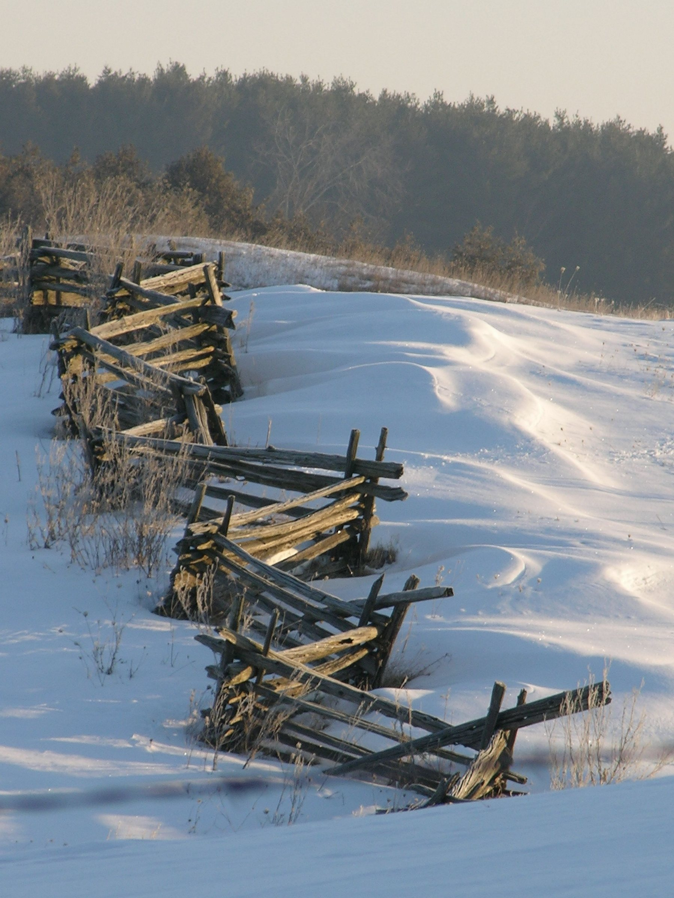
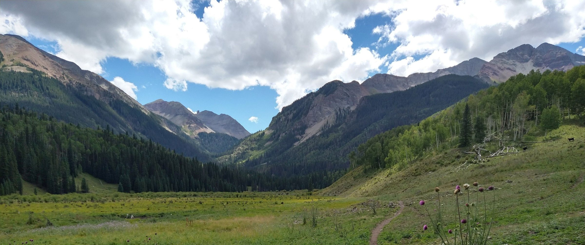
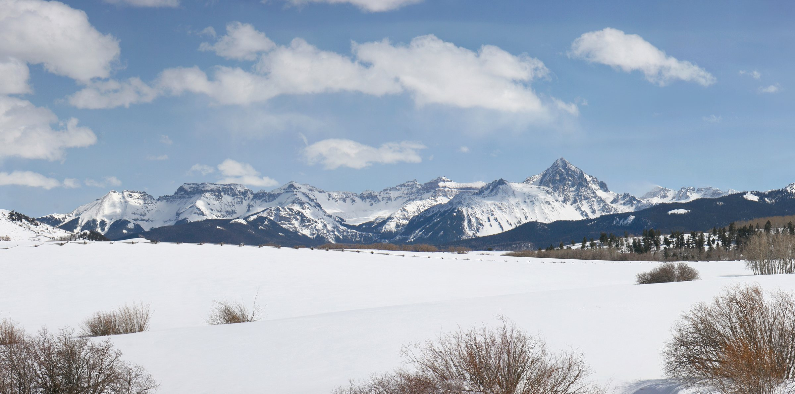
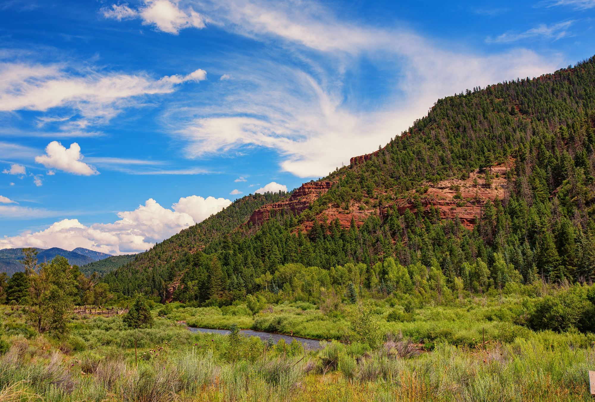
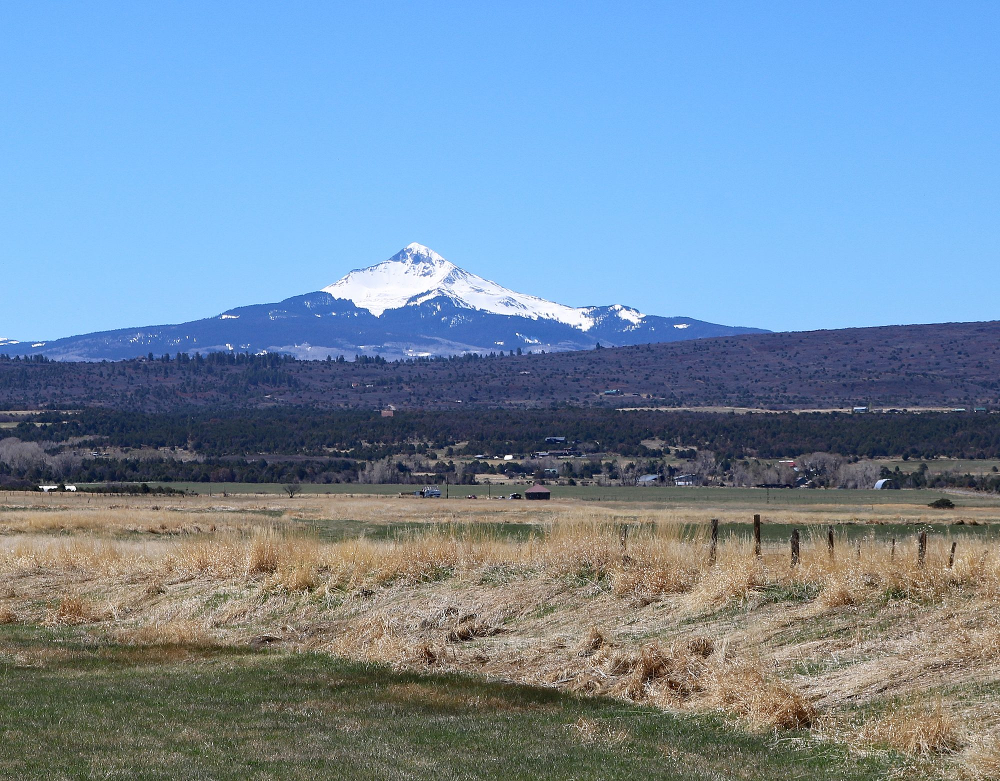
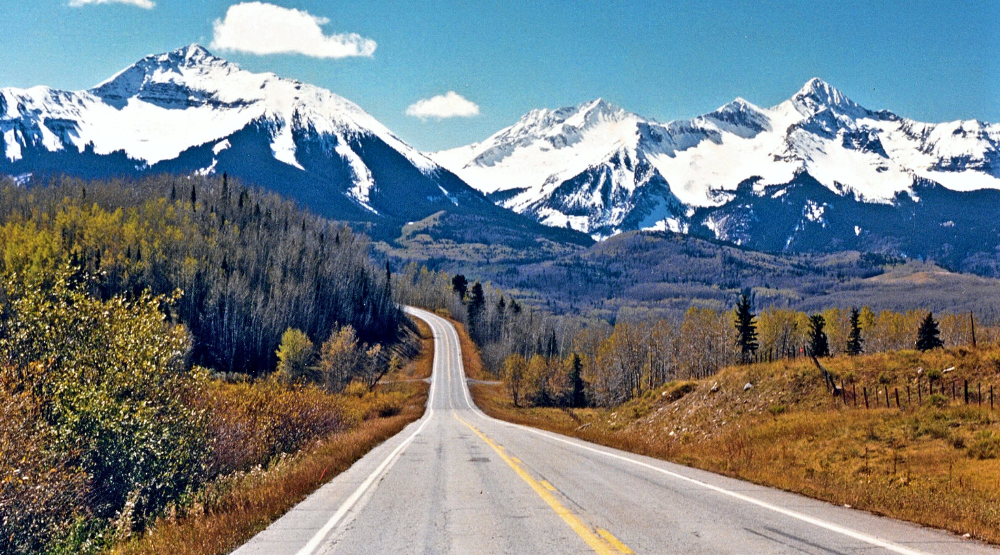

01



Iron Springs and Horsefly Mesa, Colorado
Ranch parcels of 35 acres and up north and west of CO-62, and the district lines to check before you buy one.
Iron Springs and Horsefly at a glance
The ranch subdivisions on this page sit north and west of CO-62, between Placerville and Dallas Divide, about 24 to 33 road miles from downtown Telluride. County records list every parcel in them at 35 acres or more, and a few at several hundred.
The names need care. Federal maps have no Horsefly Mesa; their Horsefly Peak, Ridge and Creek lie to the north in Ouray and Montrose counties, so here it is a local name. The federally named Iron Springs Mesa lies farther west, in the Norwood School District R-2J and the Norwood Fire Protection District. Every subdivision on this page that the county maps falls in the Telluride R-1 school district and the Telluride Fire Protection District.
Saved searches
Each card opens a live search of MLS listings, updated as they change.
01
02
Brown Ranch, McKenzie Spring Ranch, The Bluffs, the Lakes and Big Valley.
View homes

03
04
<!-- IDX_ZONE: homes-for-sale-iron-springs-mesa-feed -->
The newest Iron Springs and Horsefly Mesa listings in one compact row, six to eight homes. Builder places the Showcase hotsheet shortcode here in its compact layout.
On federal maps, Iron Springs Mesa is the ground west of these subdivisions, north of the San Miguel River, in the Norwood fire and school districts. The Telluride Fire Protection District is pursuing a boundary inclusion of about 130 square miles that the county maps over it; check its status with the district.
Horsefly Mesa is a local name that brokerages use for the ranch country west of Dallas Divide. Confirm the school and fire district for any parcel here by its address.
North of the highway, toward the Ouray and Montrose county lines. County Road 60X, which the county maintains but leaves to private plowing, reaches San Juan Ranch and Panorama Acres.
West of the highway, The Bluffs sits across CO-62 from Finnegan Ranch on Hastings Mesa. Brown Ranch Road (County Road X48) runs west toward the federally named Iron Springs Mesa: county-plowed for 1.8 miles, privately plowed for about 5.2, then not plowed for the last 4.8.
Day to day
School information is factual and by district. Always confirm a specific address in the district's school finder.
Questions
Not on federal maps. The USGS place-name database has no Horsefly Mesa in Colorado; its Horsefly Peak, Ridge and Creek lie to the north in Ouray and Montrose counties. Brokerages use the name for the ranch country west of Dallas Divide.
It depends on the parcel. The subdivisions on this page that the county maps are in Telluride School District R-1; the federally named Iron Springs Mesa, farther west, is in Norwood School District R-2J. Confirm any address with the district.
About 24 to 33 miles by road to downtown Telluride, depending on the subdivision, and about 46 to 56 to Montrose Regional Airport.
Not under that name in the county's subdivision or parcel records. A listing routes it through the San Juan Ranch gates off County Road 60X; ask Garrett for the recorded plat name.
Nearby




Resources
Contact
Send him the parcels you are watching, and he will confirm the districts and the winter road before you fly in.